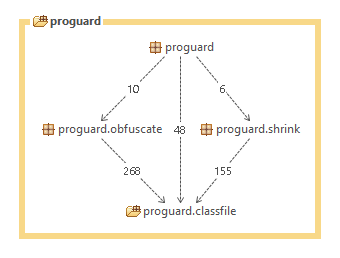
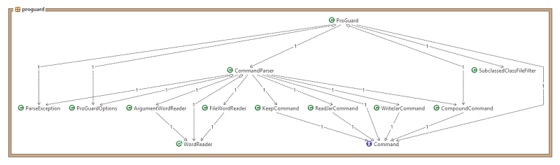
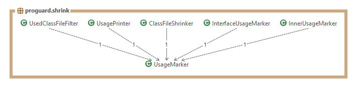
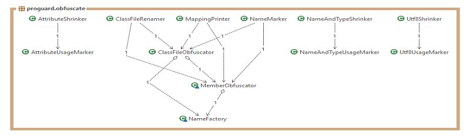
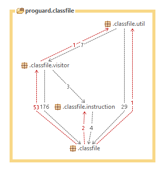

Introduzione
ProGuard è un tool, a riga di comando ed implementato in Java, per effettuare lo shrink e l'offuscamento del bytecode Java.
Il software offre le seguenti funzionalità:
- Shrink: rilevare ed eliminare classi, campi, metodi e attributi non utilizzati;
- Offuscamento: rinominare classi, campi e metodi utilizzando una nomenclatura breve;
- UI: interfaccia a riga di comando.
ProGuard riceve in input un file .jar e restituisce in output un nuovo file .jar più compatto, limitandone
il reverse-engineering.
Il file .jar prodotto necessita di minori requisiti di memoria e può essere trasferito velocemente sulla rete.
Le entità modellate dal sistema, quindi, riflettono le caratteristiche di un oggetto Java.
Architettura SW
Il modello architetturale è strutturato a livelli. In particolare, l'architettura di riferimento è di tipo open-strict:
ogni livello può comunicare con tutti i livelli sottostanti. La Fig. 1.0.1 è mostra l'architettura generale di ProGuard.

L'archtettura è suddivisa in tre livelli, descritti nei paragrafi seguenti.
Front-End
Il Front-End è il livello più alto dell'architettura e interagisce con l'utente tramite un'interfaccia a riga
di comando. In Fig. 1.0.2 è mostrato il diagramma delle dipendenze tra le relative classi.

La classe ProGuard è una classe Facade, rappresentando il punto di collegamento tra l'utente e il sistema.
La sua repsonsabilità è quella di coordinare le classi relative alla gestione delle opzioni e funzionalit à di sistema.
Function
Il livello Function è il livello intermedio dell'architettura ed è costituito da due sottositemi:
- proguard.shrink: rileva ed elimina classi, campi, metodi e attributi non utilizzati.
In Fig. 1.0.3 è mostrato il relativo diagramma delle dipendenze tra le classi.

- proguard.obfuscate: rinomina classi, campi e metodi utilizzando una nomenclatura breve.
In Fig. 1.0.4 è mostrato il relativo diagramma delle dipendenze tra le classi.

Ogni sottosistema di tale livello utilizza funzionalità del livello sottostante per assolvere alle
proprie responsabilità.
Business Model
Rappresenta il livello più basso dell'arhitettura, descrivendo il dominio applicativo del sistema. Inoltre, fornisce
interfacce di utilità, di navigazione e di gestione delle strutture dati intermedie. In Fig. 1.0.5 è mostrato il relativo diagramma delle dipendenze tra le classi.

Il Business Model è strutturato in quattro sottositemi:
- proguard.classfile: fornisce le classi che modellano il dominio applicativo;
- proguard.classfile.instruction: modella le instruzioni di un programma;
- proguard.classfile.util: fornisce le classi d utilità;
- proguard.classfile.visitor: fornisce interfacce per ispezionare e generare files .jar, oltre
a quelle di navigazione e gestione delle strutture dati intermedie.